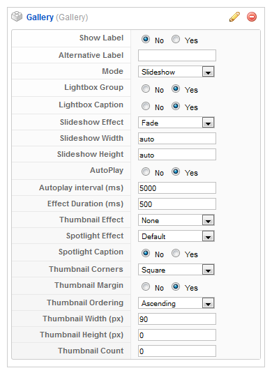

Gallery Element
In this tutorial you learn how to configure a gallery element with its specific values to use it in the ZOO extension. You'll need to install the Widgetkit as a prerequisite.
How you create an element like this, we show you in {doc: create-new-types text: this tutorial}.
1. Configuration

Here is the description of the different values:
Name: Type in the name for this element which will be used later on, for example in the item creation view or as label in the frontend. With the name you also can identify the element, when you assign it to a template position.
Source Directory: Select the Source Directory where the images that you want to show in your YOOgallery are located.
2. Element Assignment

Every element has to be assigned to a template position to show up for the visitors in the frontend of the site. See {doc: assign-elements-to-layout-positions text: this tutorial} how to assign elements to the template positions.
You can set whether the label is shown in the frontend or not. If you choose Yes the name of the element (see previous step) is used for it. If you do not want to use the elements name as label you can type in an alternative. Of course the Show Label option have to be enabled to show the alternative label.
A detailed description of the other settings, will be given once the Widgetkit documentation is released.
3. Item Creation

This is how the element looks when you create an item. See {doc: create-and-manage-items text: this tutorial} for creating an item. To choose a source path, click on the little folder icon to the right. If you type in a thumbnail title, it will be used as default description in the lightbox, instead of the filename.